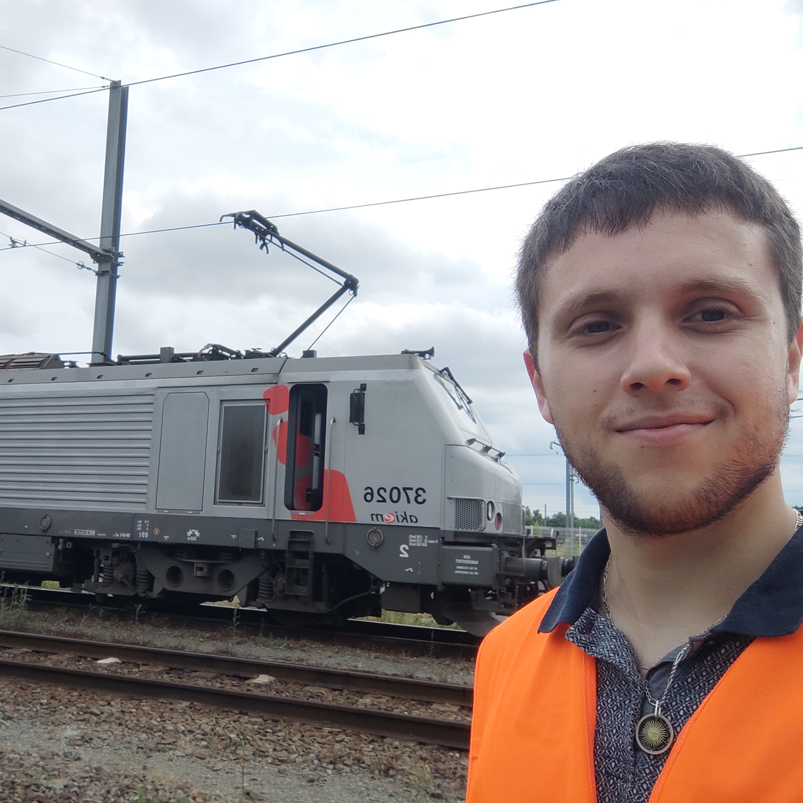

Léo Andéol
Une intelligence qui, pour un instant donné, connaîtrait toutes les forces dont la nature est animée, et la situation respective des êtres qui la composent, si d'ailleurs elle était assez vaste pour soumettre ces données à l'analyse , embrasserait dans la même formule les mouvements des plus grands corps de l'univers et ceux du plus léger atome : rien ne serait incertain pour elle, et l'avenir comme le passé , serait présent à ses yeux. —M. Le Marquis de Laplace
Table of Contents
1 Bio

PhD Student at the Institute of Mathematics of Toulouse & SNCF, and part of the ANITI (Toulouse AI Institute). I collaborate regularly with the DEEL project. I am interested in probabilistic certification of neural networks, especially for complex learning tasks such as object detection, segmentation, tracking, …
2 Education
- (2025) PhD in Applied Mathematics, Institut de Mathematiques de Toulouse, Cachan, Paris
- Funded by the French National Railways, collaborating with the DEEL AI certification project. Mainly interested in Conformal Prediction and other non-asymptotic guarantees for vision tasks.
- (2020) MSc in Applied Mathematics (MVA: Mathematics, Vision, Learning), Ecole Normale Superieure Paris-Saclay, Cachan, Paris
- (2019) MSc in Computer Science, Sorbonne University, Paris, France
- (2018) BSc in Computer Science, University Paris-Dauphine, Paris, France
3 Areas of Interets
- Uncertainty Quantification with Probabilistic Guarantees
- Conformal Prediction & Concentration-based Tolerance Regions (Risk Controling Prediction Sets)
- Interested in low error rates, complex prediction sets (see 2.) with multi dimensional control, and uniform concentration guarantees
- Computer Vision:
- Object Detection, Segmentation (And GNNs)
- Representation Learning on Videos, Object Tracking
- Learning theory
- Self Supervised Learning, LLMs, and Multimodal models
4 Experience
- (December 2022 - Current) PhD Student/Research Engineer, SNCF, Paris, France
- Employee of the state railways as part of my PhD in Applied Mathematics, on the topic of probabilistic certification for Artificial Intelligence.
- (July 2022 - November 2022) Study Engineer, Institut Mathematique de Toulouse, Toulouse, France
- Bibliography work on Conformal Prediction
- (Sept. 2020 - March 2022) Research Assistant, TU Berlin, Berlin, Germany
- Optimal Transport as a tool to approach Domain Invariance. Construction of domain invariant representations with theoretical guarantees. Applications to Cancer Detection and EEG. Analysis of representations with XAI.
- (May-August 2020) Machine Learning Engineer Intern, AIgnostics, Berlin, Germany
- Representation learning for Histopathological wholeslide images.
- (June-August 2019) Visiting Junior Fellow, RIKEN AIP & Tokyo Tech, Tokyo, Japan
- Supervised by Prof. Kanamori. Research on new methods for Deep Clustering, Domain Adaptation and Adversarial Training
- (May-July 2018 ) Research Intern, LAMSADE, Universite Paris-Dauphine, Paris, France
- Supervised by Prof. Cazenave. Development of two AIs for the game of RISK: one based on Monte-Carlo Tree Search and one on recent development on Deep Q Networks
- (April-July 2017) Software Development Intern, National Polytechnic Institute of Cambodia, Phnom Penh, Cambodia
- Web development of a library system for the university, as well as PHP lessons taught to students.
5 Conference Talks
- Sept. 2023 / COPA (Talk): Confident Object Detection via Conformal Prediction and Conformal Risk Control: an Application to Railway Signaling (
- June 2023 / MobilitAI (Poster): Conformal prediction for trustworthy detection of railway signals (?)
- April 2023 / AITA Symposium (AAAI): Conformal prediction for trustworthy detection of railway signals
6 Conference Reviewing
- NeurIPS 2023
- NeurIPS 2022
- NeurIPS 2021
7 Teaching Experience
7.1 Teaching Assistant
- 2022-2023:
- Numerical Models: Stochastic Simulations (BSc 3)
- Artificial Intelligence (BSc 3)
- 2023-2024:
- Big Data (Deep learning - MSc 2) & Projects
- Machine Learning (BSc 3)